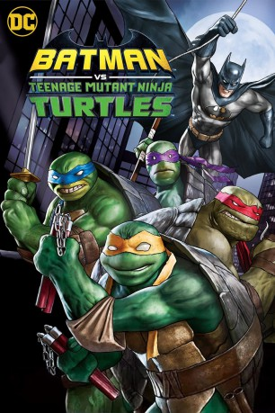

IMDB-Wertung: 7.2 / 10
IMDB-Wertung: 7.2 / 10  Metascore:
Metascore: 
Batman, Batgirl and Robin forge an alliance with The Teenage Mutant Ninja Turtles to fight against the Turtles' sworn enemy, The Shredder, who has teamed up with Ra's Al Ghul and The League Of Assassins.
 IMDB-Wertung: 7.2 / 10 Metascore:
Batman, Batgirl and Robin forge an alliance with The Teenage Mutant Ninja Turtles to fight against the Turtles' sworn enemy, The Shredder, who has teamed up with Ra's Al Ghul and The League Of Assassins.
Jahr: 2019
Dauer: 87 Minuten
FSK:
Land: USA Studio: Warner Bros. Home EntertainmentTonspuren: DD5.1 - ,
Untertitel: Deutsch, Englisch,
Auflösung: 1080p (1920x1080) Größe: 3768 MB
Genre: Action, Sci-Fi, Komödie, Abenteuer, Fantasy, Krimi, Animation/Trick
Regisseur: Jake Castorena
Drehbuch: Marly Halpern-Graser, James Tynion IV, Freddie Williams II, Bob Kane, Bill Finger
Soundtrack: Kevin Riepl
Darsteller:
 Troy Baker als Batman / Joker
Troy Baker als Batman / Joker Eric Bauza als Leonardo
Eric Bauza als Leonardo Darren Criss als Raphael
Darren Criss als Raphael Kyle Mooney als Michelangelo
Kyle Mooney als Michelangelo Carlos Alazraqui als Bane
Carlos Alazraqui als Bane Cas Anvar als Ra's al Ghul
Cas Anvar als Ra's al Ghul Brian George als Alfred
Brian George als Alfred Andrew Kishino als Shredder
Andrew Kishino als Shredder John DiMaggio als
John DiMaggio als  Tom Kenny als
Tom Kenny als  Jim Meskimen als
Jim Meskimen als  Tara Strong als
Tara Strong als Datei: X:\Comic-Trick\Batman\Batman vs. Teenage Mutant Ninja Turtles (2019, FSK, 1920x1080).mkv seit 08.06.2019
Festplatte: Comicverfilmungen+MusikCD
 Es gibt insgesamt 19 Filme in der Gruppe 'Comic-Trick\Batman'
Es gibt insgesamt 19 Filme in der Gruppe 'Comic-Trick\Batman'